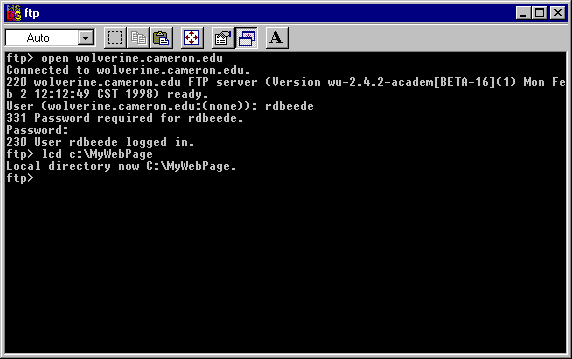

Start your FTP program. (Windows 95 has one, to run it click the start button and then select the Run option. Type in "C:\WINDOWS\FTP" and click on ok. If you are using a Linux system then login and type FTP. Their are other programs that have a graphical interface.
Type in the command open web server's URL here. That tells the ftp program to talk to a remote server. After connected provide your login information.
Type in the command lcd path and directory were web page files and program file(s) are stored and press enter.

Type in the command bin and press enter. This tells the FTP program that you are sending a binary file. You can send your HTML and Image files using Binary mode. You must use Binary mode when uploading programs and image files.
Type in the command cd directory where web files go. It changes to the directory where files need to go.
I just upload everything in one directory on my machine to the server since I save all my files their. If you just want to add a couple of files use the put name of file on local machine command.
Type in the command mput *. That puts every file in the local directory on the hard drive to the server. You will have to confirm each upload unless you give the command prompt before you begin uploading and it says Interactive mode Off.
If you want to confirm that the files are on the server issue the command ls. That will give a listing of all the files on the server.
Once the upload(s) are complete you are done and can give the command bye.